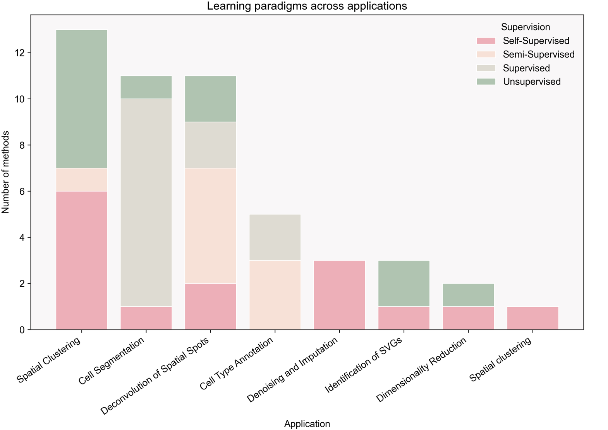
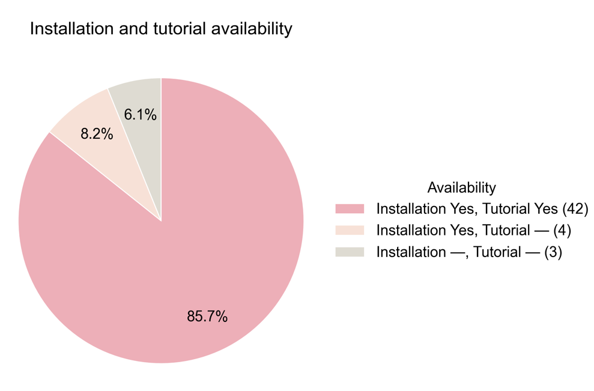

Spatial Transcriptomics (ST) Task-specific Methods
Spatial transcriptomics has emerged as a powerful technology for profiling gene expression while preserving tissue architecture. Our review identifies 49 specialized methods designed for spatial transcriptomics analysis, addressing unique challenges such as spatial clustering, cell segmentation, spatially variable gene identification, and deconvolution of spatial spots. The following statistics highlight the landscape of spatial transcriptomics methodologies.
Distribution by Learning Paradigm

Installation & Tutorial Availability

Key Insights: Spatial transcriptomics workflows split their learning paradigms fairly evenly: unsupervised plus self-supervised strategies cover 27 of 49 tools (~55%), while the remainder rely on semi-supervised or fully supervised supervision to inject spatial priors. Documentation quality is high—46 methods (94%) share installation steps and 42 (86%) pair them with tutorials, so most practitioners can onboard quickly.
Table B: Reproducibility Checklist for Spatial Transcriptomics Methods
Column Descriptions: Method - Tool/algorithm name | Application - Primary analytical task(s) | Supervision - Learning paradigm used | Code - GitHub or alternative repository link | Installation - Availability of setup instructions | Tutorials - Availability of user guides
| Method | Application | Supervision | Code | Installation | Tutorials |
|---|---|---|---|---|---|
| BLEEP | Denoising and Imputation | self-supervised | Link | ||
| stDCL | Denoising and Imputation | self-supervised | Link | Yes | Yes |
| stImpute | Denoising and Imputation | self-supervised | Link | Yes | Yes |
| SpaHDmap | Dimensionality Reduction | self-supervised | Link | Yes | Yes |
| STAMP | Dimensionality Reduction | unsupervised | Link | Yes | Yes |
| SPADE | Spatial clustering | self-supervised | Link | Yes | Yes |
| GASTON | Identification of SVGs | self-supervised | Link | Yes | Yes |
| PROST | Identification of SVGs | unsupervised | Link | Yes | Yes |
| GAADE | Identification of SVGs | unsupervised | Link | ||
| STAIG | Spatial Clustering | self-supervised | Link | Yes | Yes |
| SpaGCN | Spatial Clustering | unsupervised | Link | Yes | Yes |
| GraphST | Spatial Clustering | self-supervised | Link | Yes | Yes |
| STAGATE | Spatial Clustering | unsupervised | Link | Yes | Yes |
| ResST | Spatial Clustering | self-supervised | Link | Yes | Yes |
| DeepST | Spatial Clustering | unsupervised | Link | Yes | Yes |
| SPACEL | Deconvolution of Spatial Spots | semi-supervised | Link | Yes | Yes |
| STMSGAL | Spatial Clustering | self-supervised | Link | Yes | Yes |
| MAFN | Spatial Clustering | unsupervised | Link | ||
| STAGUE | Spatial Clustering | unsupervised | Link | Yes | Yes |
| conST | Spatial Clustering | self-supervised | Link | Yes | Yes |
| stMVC | Spatial Clustering | semi-supervised | Link | Yes | Yes |
| SiGra | Spatial Clustering | self-supervised | Link | Yes | Yes |
| SpaGT | Spatial Clustering | unsupervised | Link | Yes | Yes |
| Focus Framework | Cell Type Annotation | semi-supervised | Link | Yes | |
| Spatial-ID | Cell Type Annotation | supervised | Link | Yes | |
| SPANN | Cell Type Annotation | supervised | Link | Yes | Yes |
| scBOL | Cell Type Annotation | semi-supervised | Link | Yes | Yes |
| STELLAR | Cell Type Annotation | semi-supervised | Link | Yes | Yes |
| SpaDecon | Deconvolution of Spatial Spots | semi-supervised | Link | Yes | Yes |
| SD2 | Deconvolution of Spatial Spots | semi-supervised | Link | Yes | |
| STdGCN | Deconvolution of Spatial Spots | semi-supervised | Link | Yes | Yes |
| SPADE | Deconvolution of Spatial Spots | supervised | Link | Yes | Yes |
| CLPLS | Deconvolution of Spatial Spots | self-supervised | Link | Yes | Yes |
| SpatialcoGCN | Deconvolution of Spatial Spots | self-supervised | Link | Yes | Yes |
| LETSmix | Deconvolution of Spatial Spots | supervised | Link | Yes | Yes |
| STdeconvolve | Deconvolution of Spatial Spots | unsupervised | Link | Yes | Yes |
| STRIDE | Deconvolution of Spatial Spots | unsupervised | Link | Yes | Yes |
| SMART | Deconvolution of Spatial Spots | semi-supervised | Link | Yes | Yes |
| Cellpose | Cell Segmentation | supervised | Link | Yes | Yes |
| Cellpose2.0 | Cell Segmentation | supervised | Link | Yes | Yes |
| Cellpose3 | Cell Segmentation | supervised | Link | Yes | Yes |
| BIDCell | Cell Segmentation | self-supervised | Link | Yes | Yes |
| SCS | Cell Segmentation | supervised | Link | Yes | Yes |
| UCS | Cell Segmentation | supervised | Link | Yes | Yes |
| Segger | Cell Segmentation | supervised | Link | Yes | |
| JSTA | Cell Segmentation | supervised | Link | Yes | Yes |
| CelloType | Cell Segmentation | supervised | Link | Yes | Yes |
| FICTURE | Cell Segmentation | unsupervised | Link | Yes | Yes |
| GeneSegNet | Cell Segmentation | supervised | Link | Yes | Yes |
📊 Analysis Summary
- Total Methods Reviewed: 49
- Primary Applications: Spatial Clustering, Cell Segmentation, Cell Type Annotation, Deconvolution, SVG Identification, Dimensionality Reduction
- Supervision Paradigms: Unsupervised, Self-supervised, Semi-supervised, Supervised
- Code Availability: 49/49 (100%) methods link to public repositories
- Installation Support: 46/49 (94%) document installation steps and 42/49 (86%) supply tutorials (all 42 provide both)
- Notable Applications: Spatial clustering is the most common application (20+ methods), followed by cell segmentation (10+ methods)